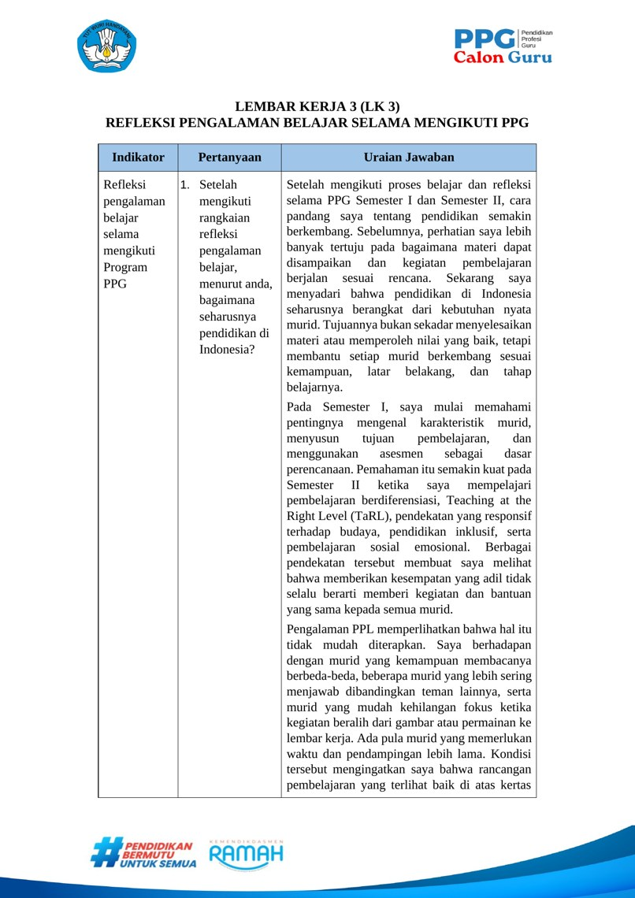

Refleksi Akhir Program PPG
Dari pengalaman belajar Semester I dan II menuju komitmen menjadi guru profesional yang terus belajar, memahami murid, dan memperbaiki praktik.

Selama PPG, saya tidak hanya belajar menyusun perangkat pembelajaran, tetapi juga memahami bahwa rancangan harus terus diuji melalui kebutuhan dan respons murid. LK 3 ini merangkum cara pandang yang berkembang, kemampuan yang masih perlu saya perbaiki, dan tindakan yang ingin saya jalankan setelah PPG.
Pandangan tentang pendidikan di Indonesia
Bagaimana seharusnya pendidikan di Indonesia?
Pendidikan yang berpihak pada kebutuhan nyata murid.
Setelah mengikuti proses belajar dan refleksi selama PPG Semester I dan Semester II, cara pandang saya tentang pendidikan semakin berkembang. Sebelumnya, perhatian saya lebih banyak tertuju pada bagaimana materi dapat disampaikan dan kegiatan pembelajaran berjalan sesuai rencana. Sekarang saya menyadari bahwa pendidikan di Indonesia seharusnya berangkat dari kebutuhan nyata murid. Tujuannya bukan sekadar menyelesaikan materi atau memperoleh nilai yang baik, tetapi membantu setiap murid berkembang sesuai kemampuan, latar belakang, dan tahap belajarnya.
Pada Semester I, saya mulai memahami pentingnya mengenal karakteristik murid, menyusun tujuan pembelajaran, dan menggunakan asesmen sebagai dasar perencanaan. Pemahaman itu semakin kuat pada Semester II ketika saya mempelajari pembelajaran berdiferensiasi, Teaching at the Right Level (TaRL), pendekatan yang responsif terhadap budaya, pendidikan inklusif, serta pembelajaran sosial emosional. Berbagai pendekatan tersebut membuat saya melihat bahwa memberikan kesempatan yang adil tidak selalu berarti memberi kegiatan dan bantuan yang sama kepada semua murid.
Pengalaman PPL memperlihatkan bahwa hal itu tidak mudah diterapkan. Saya berhadapan dengan murid yang kemampuan membacanya berbeda-beda, beberapa murid yang lebih sering menjawab dibandingkan teman lainnya, serta murid yang mudah kehilangan fokus ketika kegiatan beralih dari gambar atau permainan ke lembar kerja. Ada pula murid yang memerlukan waktu dan pendampingan lebih lama. Kondisi tersebut mengingatkan saya bahwa rancangan pembelajaran yang terlihat baik di atas kertas belum tentu langsung berjalan sesuai harapan di kelas.
Saya juga melihat pentingnya menghubungkan pembelajaran dengan kehidupan murid. Ketika materi IPAS dikaitkan dengan cerita keluarga dan tradisi masyarakat Maluku, misalnya, pengalaman murid dapat menjadi sumber belajar yang dekat dengan keseharian mereka. Namun, konteks yang menarik saja belum cukup. Guru tetap harus memastikan bahwa semua murid mendapat kesempatan terlibat, memahami instruksi, serta memperoleh bantuan ketika mengalami kesulitan.
Karena itu, saya memandang pendidikan Indonesia seharusnya lebih inklusif, kontekstual, dan manusiawi. Sekolah perlu menjadi tempat yang aman untuk bertanya, mencoba, dan melakukan kesalahan. Guru, orang tua, dan lingkungan sekolah perlu bekerja sama, sedangkan teknologi digunakan ketika benar-benar mendukung belajar. Keberhasilan pendidikan juga perlu dilihat dari proses dan perkembangan murid, bukan hanya hasil akhir.
Menjadi guru profesional
Apa yang dapat saya lakukan untuk menjadi guru profesional?
Kompetensi dibangun melalui praktik, refleksi, dan perbaikan.
Saya menyadari bahwa menjadi guru profesional bukan hanya soal menguasai materi atau mampu membuat perangkat ajar. Saya perlu mengenal murid, merancang pembelajaran berdasarkan tujuan yang jelas, menggunakan asesmen secara tepat, serta bersedia menyesuaikan cara mengajar ketika kebutuhan di kelas berbeda dari perkiraan. Bagi saya, profesionalisme tampak dari keputusan kecil yang diambil guru setiap hari dan kesediaannya mempertanggungjawabkan keputusan tersebut.
Hal pertama yang perlu saya lakukan adalah menjadikan asesmen dan pengamatan sebagai dasar pembelajaran. Saya akan memeriksa kemampuan awal, memperhatikan cara murid merespons kegiatan, memberikan pertanyaan atau tugas dengan tingkat bantuan yang sesuai, dan menindaklanjuti hasilnya. Saya tidak ingin mengelompokkan murid secara tetap seolah kemampuan mereka tidak dapat berubah. Tujuan belajar tetap sama, tetapi penjelasan, media, pertanyaan penuntun, dan bentuk respons dapat disesuaikan agar lebih banyak murid memiliki kesempatan untuk mencapai tujuan itu.
Saya juga harus terus memperbaiki pengelolaan kelas dan hubungan dengan murid. Selama PPL, saya masih menghadapi kendala dalam mengatur waktu, menjaga perhatian murid, dan membagi kesempatan berbicara secara merata. Saya belajar bahwa membuat kegiatan menarik saja belum menjamin semua murid terlibat. Karena itu, saya perlu memberi instruksi singkat dan bertahap, mengatur peran dalam kelompok, menggunakan pendekatan personal, serta membangun suasana kelas yang membuat murid merasa aman untuk mencoba dan menyampaikan pendapat.
Artefak seperti modul ajar, LKPD, hasil asesmen, catatan observasi, dan dokumentasi praktik mengajar juga perlu saya gunakan sebagai bahan evaluasi, bukan sekadar kelengkapan portofolio. Dari bahan-bahan tersebut, saya dapat memeriksa bagian yang berjalan baik, kesulitan yang muncul, serta perubahan yang perlu dilakukan pada pertemuan berikutnya. Saya harus terbuka terhadap masukan guru pamong, dosen, rekan sejawat, dan orang tua tanpa merasa bahwa setiap pelajaran harus terlihat sempurna.
Sebagai guru profesional, saya akan membiasakan diri belajar dan berefleksi secara berkelanjutan, menjaga sikap serta etika profesi, bekerja sama dengan warga sekolah, dan mencoba inovasi yang benar-benar menjawab masalah belajar murid. Saya menyadari masih ada kemampuan yang perlu saya perbaiki. Lulus PPG bukan akhir proses belajar saya, melainkan awal tanggung jawab untuk terus meningkatkan kualitas praktik mengajar.
Rencana tindak lanjut
Tiga hal penting ketika memulai karier sebagai guru
Komitmen yang dapat dijalankan dan dievaluasi secara bertahap.
Mengenal murid dan menciptakan lingkungan belajar yang aman
Pada awal saya mengajar, saya akan melakukan asesmen diagnostik sederhana, mengamati kemampuan dasar dan partisipasi murid, serta berbicara dengan mereka dan orang tua jika diperlukan. Hasilnya menjadi dasar pemberian dukungan, bukan untuk memberi label. Saya juga akan menyepakati aturan kelas bersama murid agar mereka merasa dihargai, berani bertanya, dan tidak takut salah.
Menerapkan pembelajaran yang fleksibel dan mengevaluasinya secara rutin
Saya akan menyusun kegiatan berdasarkan tujuan pembelajaran dan hasil asesmen awal. Media konkret, cerita lokal, permainan, maupun teknologi akan saya pilih sesuai kebutuhan dan fasilitas yang tersedia. Selama pembelajaran, saya akan memakai cek pemahaman atau tiket keluar sederhana, lalu menyiapkan bantuan, remedial, atau pengayaan sesuai hasilnya. Setiap selesai mengajar, saya akan mencatat apa yang berhasil dan apa yang perlu diperbaiki, terutama terkait waktu dan pemerataan partisipasi.
Menjalin kolaborasi dan terus meningkatkan kompetensi
Saya akan berdiskusi dengan rekan guru, meminta masukan ketika menghadapi kesulitan, serta menjaga komunikasi dengan orang tua. Saya juga ingin aktif dalam komunitas belajar, mempelajari praktik yang relevan, dan mengembangkan media atau karya inovasi sederhana secara bertahap. Inovasi yang saya buat perlu dicoba, dinilai manfaatnya bagi murid, lalu diperbaiki sebelum digunakan lebih luas.
Ketiga langkah tersebut ingin saya jalankan secara bertahap dan konsisten. Dengan begitu, pengalaman belajar selama PPG tidak berhenti sebagai tugas perkuliahan, tetapi menjadi kebiasaan nyata ketika saya menjalankan tanggung jawab sebagai guru.
Jejak belajar yang mendukung refleksi
Refleksi keseluruhan ini terhubung dengan dokumen dan praktik yang telah didokumentasikan pada Semester I dan II.
Refleksi tertulis dan rencana tindak lanjut saya.
Versi lengkap tersedia dalam format dokumen resmi dengan logo dan tabel LK 3, serta versi Word untuk arsip.